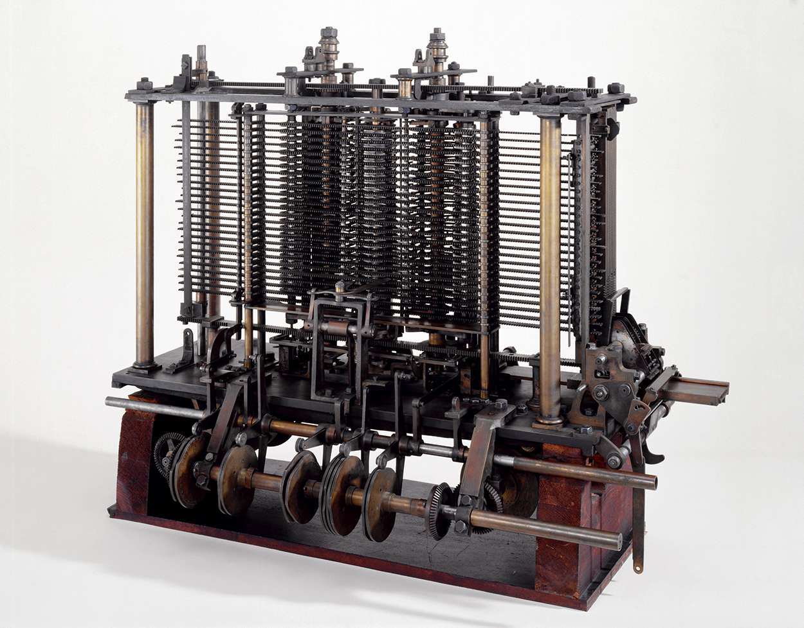

Odată cu revigorarea matematicii și a științelor în timpul Renașterii europene au apărut o succesiune de dispozitive mecanice de calculat, bazate pe principiul ceasornicului, de exemplu mașina inventată de Blaise Pascal. Tehnica de stocare și citire a datelor pe cartele perforate a apărut în secolul al XIX-lea. În același secol, Charles Babbage este cel dintâi care proiectează o mașină de calcul complet programabilă (1837), însă din păcate proiectul său nu va prinde roade, în parte din cauza limitărilor tehnologice ale vremii.
Primele mașini de calcul erau aparate mecanice, care efectuau calcule analogice. Un plan îndrăzneț pentru o astfel de mașină a fost cel al inginerului englez Charles Babbage, în anii 1820. Proiectul său pentru o mașină mecanică era însă mult mai complex decât orice alt dispozitiv realizat la acea vreme, și nu s-au putut realiza piese cu o precizie suficient de mare, și proiectul său a fost în cele din urmă abandonat. În acea perioadă a fost preluată o tehnologie folosită deja la mașinile muzicale și la războaiele de țesut, tehnologia cartelelor perforate, adaptată pentru mașinile de calcul, ca tehnică principală de programare. Tot atunci, au apărut primele mașini de calcul electrice, bazate pe simularea, cu ajutorul elementelor de circuit electric, a proprietăților sistemelor în care se efectuau calculele.
Babbage a început să-și proiecteze „Mașina analitică” în 1837, dar nu a reușit să o construiască până la moartea sa, din cauza limitărilor tehnologice ale vremii. Cu toate acestea, o mașină construită în 1991 după schițele sale s-a dovedit a funcționa perfect. Ideile lui Babbage erau atât de revoluționare pentru vremea sa încât n-au fost înțelese decât de o singură persoană dintre contemporanii săi. Aceasta era matematiciana Ada Lovelace, cea care a și scris primul program pentru Mașina analitică a lui Babbage, rămânând astfel în istorie ca primul programator.